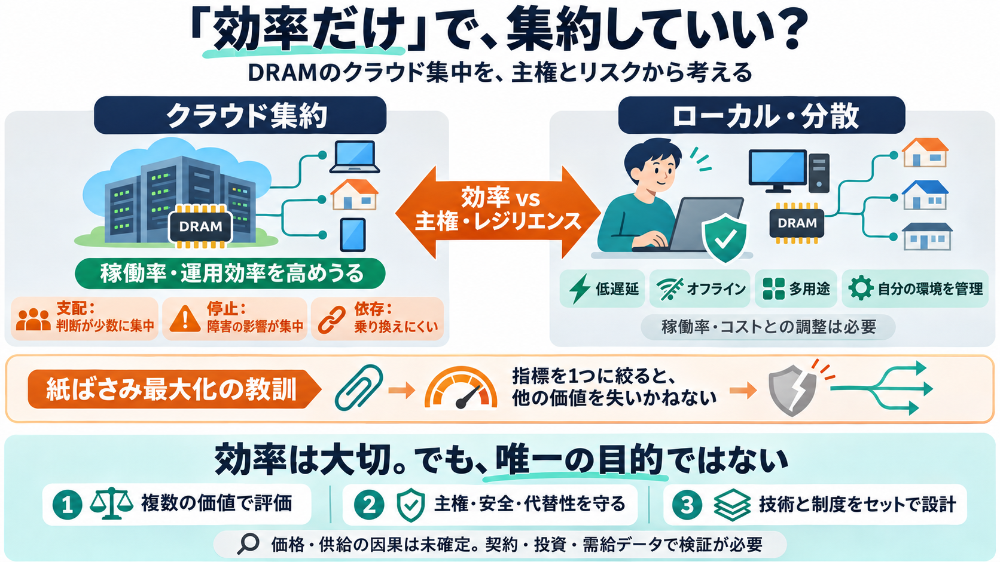

Sam Altman RAM Remark: 40% DRAM Share Claim [2026]
The counterarguments are just as concrete. First, ownership. A person who buys RAM owns a working tool and pays for it o…

The counterarguments are just as concrete. First, ownership. A person who buys RAM owns a working tool and pays for it o…
Now the CEO of OpenAI has a different way of looking at that memory. On October 29, 2026, Sam Altman appeared on John Co…
Altman's comments come at a time when computer parts prices are in a pressure cooker — especially RAM. Conventional DRAM…
# OpenAI Sam Altman Says Local AI Is BAD - Local AI FTW! ## Channel: STARTUP HAKK 24.1K subscribers ### Description 11,…
According to a report by The Information, the two companies are still working through negotiations related to how Broadc…